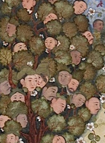
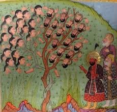

AL-WAKWAK
Introduction
The Waq Waq Islands were mentioned in Arabic literature between the ninth and sixteenth centuries as legendary islands whose exact location was not determined. There are accounts that say they are from the islands of the African coast, and others claim that they are from the Asian coast. They were also mentioned as the islands of Japan. Some Arab Muslim travelers built some assumptions on these accounts, claiming that they traveled to the Waq Waq Islands. Many legendary stories were woven around what these islands contain.Some have described it as containing strange plants with fruit shaped like women. Others have said it is inhabited only by women and ruled by a woman who sits naked on her throne. It is also said that it is so rich in gold that its inhabitants make various items from it.
The name Waq Waq appears in one of the strangest mythological accounts of the islands. The story mentions a type of tree whose fruit grows in the form of women with long hair attached to the tree's branches. When the fruit (referring to the woman) ripens, it falls to the ground, making a sound similar to "Waq Waq." It's worth noting that this legend can be linked to another legend, which claims that all the inhabitants of these islands are women. The presence of this tree explains the absence of men from the islands.
Literary
The Waqwaq is a Persian oracular tree, originating from India, whose branches or fruits become heads of men, women or monstrous animals (depending on version) screaming "Waq-Waq", which means screams in Persian.
In 859 AD the basrien writer Jahiz described this tree as populated with both animals and women hanging by their hair.

Ajâb'ib Nâmeh of Tusi Salmani in 1388 also claimed to have seen the tree in The Book of Curiosities. However, he gave a very different description. He wrote that the tree was decorated symmetrically with the heads of human females, birds, horses, ducks , monkeys, hares, foxes, cocks, and rams. It supposedly ate these animals and their heads bloomed from its branches like flowers
In Arab versions, the famous island of Waq-Waq is located in the China Sea. A queen rules the island and the population is entirely female: it is usually illustrated in al-Qazvini manuscripts of the Wonders of Creation showing the queen surrounded by her female attendants.[3]
Ibn Khordadbeh mentions Waqwaq twice:[4] East of China are the lands of Waqwaq, which are so rich in gold that the inhabitants make the chains for their dogs and the collars for their monkeys of this metal. They manufacture tunics woven with gold. Excellent ebony wood is found there.
Picture

Location
"Waq Waq" first appeared in the famous 10th-century geographer Ibn Hawqal's Kitab Surat al-Ard (Book of the Image of the Earth). Since then, it has become a common name in Arabic geographical literature. Geographers such as al-Idrisi, al-Qazwini, and Ibn al-Wardi described it, and it appeared on their maps as islands located in the far east of Asia, sometimes near China or Japan, and other times off the coast of East Africa.
Ibn Khordadbeh mentions Waqwaq twice: East of China are the lands of Waqwaq, which are so rich in gold that the inhabitants make the chains for their dogs and the collars for their monkeys of this metal. They manufacture tunics woven with gold. Excellent ebony wood is found there.

Waq Waq is a group of islands mentioned in ancient Arab heritage books. It is not possible to determine whether they are real or imaginary, and there is no evidence to prove whether they are real or imaginary. Most geography books indicate that their location is in the China Sea or the Indian Ocean. Waq Waq is a name given by the Arabs to two different locations. The first country is located in the Far East, on the eastern coast of the Asian continent, specifically in northern China. However, some orientalists claimed that the location was not on the eastern coast, but rather the Japanese islands themselves, while the second location is referred to as the island of Madagascar located in the African continent. The best evidence of the validity of this is the map attributed to Al-Idrisi.
Research
Poeple
Al-Masudi, in his book “Muruj Al-Dhahab,” described the inhabitants of Waq Waq as being black-skinned, muscular, wearing animal skins, engaging in trade with the Arabs, and possessing an abundance of gold.
Description
Mohammed ben Bâbichâd told me from what he had heard from one of those who went to Waq Waq: that there were large trees. sometimes with elongated rounded leaves that bear fruit like squash, but bigger, that have a human face: when the wind stirs the leaves, a voice comes out, and the inside fills with air, like the pods of the milkweed. If they are detached from the tree, the air escapes at once and they become flat and flabby like a piece of skin.